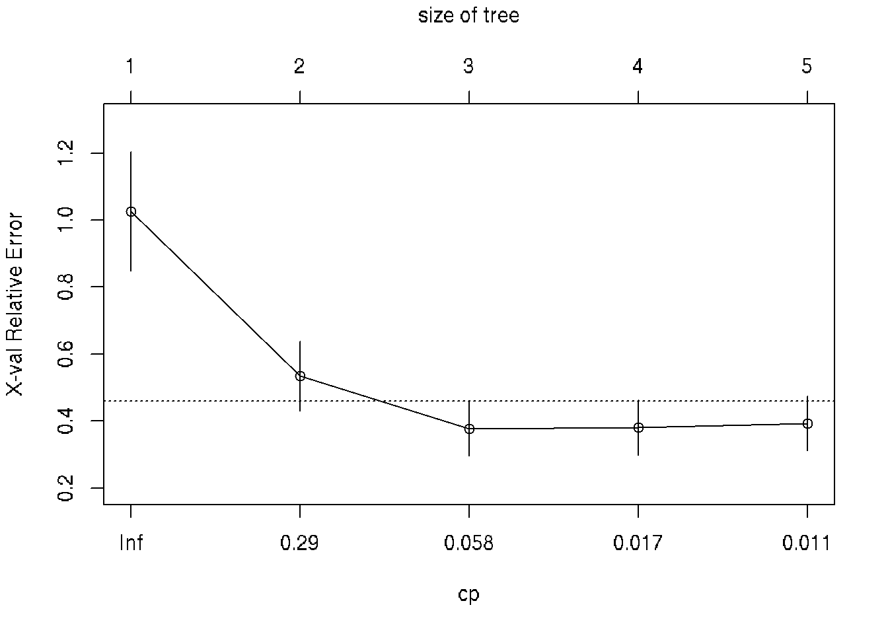
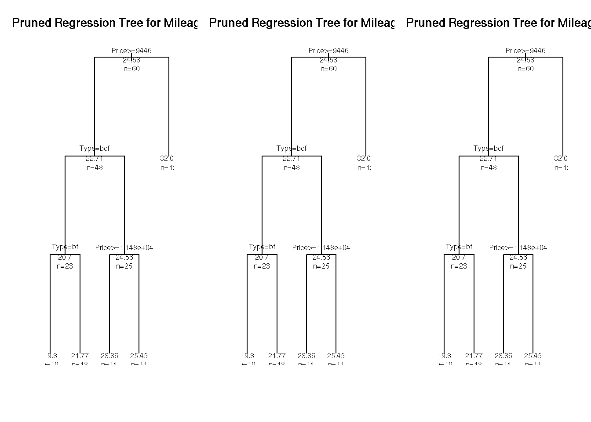

Chapter 31 Logistic Regression
The logistic model (or logit model) is a statistical model with input (independent variable) a continuous variable and output (dependent variable) a binary variable (discret choice, e.g. yes/no or 1/0).
31.1 Confusion matrix
A confusion matrix is a table that is often used to describe the performance of a classification model (or “classifier”) on a set of test data for which the true values are known.
| n=165 | Predicted: NO | Predicted: Yes- |
|---|---|---|
| Actual: No | TN = 50 | FP = 10 |
| Actual: Yes | FN = 5 | TP = 100 |
TN - true negatives
TP - true positives
FN - false negatives
FP - false posistives
Accuracy - Overall, how often is the classifier correct?
(TP+TN)/total = (100+50)/165 = 0.91
Misclassification Rate - Overall, how often is it wrong?
(FP+FN)/total = (10+5)/165 = 0.09
equivalent to 1 - Accuracy
also known as “Error Rate”
True Positive Rate: When it’s actually yes, how often does it predict yes? TP/actual yes = 100/105 = 0.95 also known as “Sensitivity” or “Recall”
False Positive Rate: When it’s actually no, how often does it predict yes? FP/actual no = 10/60 = 0.17
True Negative Rate: When it’s actually no, how often does it predict no? TN/actual no = 50/60 = 0.83 equivalent to 1 minus False Positive Rate also known as “Specificity”
Precision: When it predicts yes, how often is it correct? TP/predicted yes = 100/110 = 0.91
Prevalence: How often does the yes condition actually occur in our sample? actual yes/total = 105/165 = 0.64
Null Error Rate: This is how often you would be wrong if you always predicted the majority class. (In our example, the null error rate would be 60/165=0.36 because if you always predicted yes, you would only be wrong for the 60 “no” cases.) This can be a useful baseline metric to compare your classifier against. However, the best classifier for a particular application will sometimes have a higher error rate than the null error rate, as demonstrated by the Accuracy Paradox.
Cohen’s Kappa: This is essentially a measure of how well the classifier performed as compared to how well it would have performed simply by chance. In other words, a model will have a high Kappa score if there is a big difference between the accuracy and the null error rate. (More details about Cohen’s Kappa.)
F Score: This is a weighted average of the true positive rate (recall) and precision. (More details about the F Score.)
ROC Curve: This is a commonly used graph that summarizes the performance of a classifier over all possible thresholds. It is generated by plotting the True Positive Rate (y-axis) against the False Positive Rate (x-axis) as you vary the threshold for assigning observations to a given class. (More details about ROC Curves.)
Example:
A group of 20 students spend between 0 and 6 hours studying for an exam. How does the number of hours spent studying affect the probability that the student will pass the exam?
hours <- c(0.5, 0.75, 1, 1.25, 1.5, 1.75, 1.75, 2, 2.25, 2.5, 2.75, 3, 3.25, 3.5, 4, 4.25, 4.5, 4.75, 5, 5.5)
pass <- c(0,0,0,0,0,0,1,0,1,0,1,0,1,0,1,1,1,1,1,1)
model = glm(pass ~ hours, family = binomial)
newdat <- data.frame(hours=seq(min(hours), max(hours),len=100))
newdat$pass = predict(model, newdata=newdat, type="response")
# plot
plot(pass ~ hours)
lines(pass ~ hours, newdat, col="red")
# data
data <- data.frame(hours=c(0.5, 0.75, 1, 1.25, 1.5, 1.75, 1.75, 2, 2.25, 2.5,
2.75, 3, 3.25, 3.5, 4, 4.25, 4.5, 4.75, 5, 5.5),
pass=c(0,0,0,0,0,0,1,0,1,0,1,0,1,0,1,1,1,1,1,1),
pass.predic = rep(NA, 20), # slot for predicted pass
pass.logit = rep(NA, 20)) # slot logit prediction
# model
model <- glm(data$pass ~ data$hours, family = binomial)
# predict values of logit function
data$pass.logit <- predict(model, newdata=data, type='response')
# predict pass for threshold = 0.5
data$pass.predic <- ifelse(data$pass.logit > 0.5, 1, 0)
# Confusion matrix
library(caret)
caret::confusionMatrix(data = factor(data$pass.predic),
reference = factor(data$pass))## Confusion Matrix and Statistics
##
## Reference
## Prediction 0 1
## 0 8 2
## 1 2 8
##
## Accuracy : 0.8
## 95% CI : (0.5634, 0.9427)
## No Information Rate : 0.5
## P-Value [Acc > NIR] : 0.005909
##
## Kappa : 0.6
##
## Mcnemar's Test P-Value : 1.000000
##
## Sensitivity : 0.8
## Specificity : 0.8
## Pos Pred Value : 0.8
## Neg Pred Value : 0.8
## Prevalence : 0.5
## Detection Rate : 0.4
## Detection Prevalence : 0.5
## Balanced Accuracy : 0.8
##
## 'Positive' Class : 0
## p <- seq(0,1, by=0.05)
data <- data.frame(probability=p, odds=p/(1-p))
head(data)## probability odds
## 1 0.00 0.00000000
## 2 0.05 0.05263158
## 3 0.10 0.11111111
## 4 0.15 0.17647059
## 5 0.20 0.25000000
## 6 0.25 0.33333333plot(data$odds~data$probability, type='o', pch=19, xlab='Probability', ylab='Odds')plot(log(data$odds)~data$odds, type='o', pch=19, xlab='Odds', ylab='log(odds)')
plot(data$probability~log(data$odds), type='o', pch=19, xlab='log(odds)', ylab='Probability')
31.2 Next part
library(data.table)
df <- fread('https://raw.githubusercontent.com/suvarzz/data/master/data_classification.csv', header=T, sep=",")
head(df)
plot(df[pass==1][,!3], col='red')
points(df[pass==0][,!3], col='blue')
model.logit <- glm(pass ~ studied + slept, data = df, family = 'binomial')
summary(model.logit)
p.lda <- predict(model.logit, df, type = 'response')
df$predicted <- ifelse(p.lda > 0.5, 1, 0)
head(df)
a=-coef(model.logit)[1]/coef(model.logit)[2],
b=-coef(model.logit)[1]/coef(model.logit)[3])
b0 = coef(model.logit)[1]
b1 = mymodel$coefficients[[2]]
b2 = mymodel$coefficients[[3]]
z = b0 + (b1 * 1) + (b2 * 4)
p = 1 / (1 + exp(-z))
if p=0.5 => z = 0 => b0 + b1*x + b2*y =>
segments(0,10.87,9.26,0)
slept=(3.77-0.474*studied)/0.338
(0, 3.77/0.474) = (9.2, 0)
(3.77/0.474,0) = (0, 10.87)
segments(9.2,0, 0,10.87, lwd=2)31.3 NExt part
# Example of logistic regression
# Source: 17 - Анализ данных в R. Логистическая регрессия by Anatoliy Karpov
# Read data set train.csv:
# Statistics of students in a school
# gender - male/femail
# read, write, math - points for subjects
# hon - if honorary degree Y/N
# FIX combine train and test into one csv file. Split train and test inside this script
setwd("~/RData")
df <- read.csv("train.csv", sep=";")
# Visual inspection of the dataset
head(df)
str(df)
View(df)
# N-not the best mark, Y-the best mark
library(ggplot2)
ggplot(df, aes(read,math,col=gender))+geom_point()+facet_grid(.~hon)+
theme(axis.text=element_text(size=25), axis.title=element_text(size=25, face='bold'))
# Apply logistic regression
# How hon depends on different variables: read, math, gender
fit <- glm(hon ~ read + math + gender, df, family = "binomial")
summary(fit)
# Meanings of coefficients:
# read-estimate: 0.06677 - if female, math is fixed, if read change to 1, then ln(odds) will be changed to 0.06677
# Get data from fit
exp(fit$coefficients)
# Predict model - ln(odds)
head(predict(object=fit))
# Predict model - return probability to get the best mark for every person
head(predict(object = fit, type = "response"))
# Add probabilities to get the best mark for every person in df
df$prob <- predict(object = fit, type = "response")
df
# Part 2
# ROC-curve of predicted model
library(ROCR)
# Predicted values and real values
pred_fit <- prediction(df$prob, df$hon)
# Calculate tpr - true positive rate and fpr - false positive rate
perf_fit <- performance(pred_fit, "tpr", "fpr")
# plot ROC-curve
plot(perf_fit, colorize=T, print.cutoffs.at = seq(0,1, by=0.1))
# Area under the curve: 0.87
auc <- performance(pred_fit, measure = "auc")
str(auc)
# How to detect the border and make a decision if student will get honorary degree
# Specificity - how good we can predict negative results
perf3 <- performance(pred_fit, x.measure = "cutoff", measure = "spec")
# Sencitivity - how good we can predict positive results
perf4 <- performance(pred_fit, x.measure = "cutoff", measure = "sens")
# Общая интенсивность классификатора
perf5 <- performance(pred_fit, x.measure = "cutoff", measure = "acc")
plot(perf3, col = 'red', lwd = 2)
plot(add=T, perf4, col = "green", lwd = 2)
plot(add=T, perf5, lwd = 2)
legend(x = 0.6, y = 0.3, c("spec", "sens", "accur"), lty=1, col=c("red", "green", "black"),
bty='n', cex=1, lwd=2)
abline(v=0.255, lwd=2)
# The border is the intersection of all three curves
# Add column with prediced values Y/N
df$pred_resp <- factor(ifelse(df$prob > 0.255, 1, 0), labels=c("N", "Y"))
# 1 if prediction is correct, 0 if not correct
df$correct <- ifelse(df$pred_resp == df$hon, 1, 0)
df
# blue - correct classified, red - incorrect classified
# it is more difficult to predict positive result
ggplot(df, aes(prob, fill = factor(correct)))+
geom_dotplot()+
theme(axis.text=element_text(size=25),
axis.title=element_text(size=25, face="bold"))
# Percent of positive predictions
mean(df$correct)
# Part 3 - Prediction using test data
test_df <- read.csv("test.csv", sep=";")
test_df
# Predict honorary members
test_df$prob_predict <- predict(fit, newdata=test_df, type="response")
test_df$pred_resp <- factor(ifelse(test_df$prob_predict > 0.255, 1, 0), labels=c("N", "Y"))
test_df